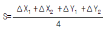
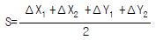
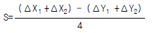
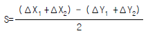

지적기능사 (2002-10-06 기출문제)
1과목: 지적일반(임의구분)
1. 다음 중 "1 필지"에 대한 설명으로 틀린 것은?
- 지목이 같다.
- 지반이 연속되고 하나의 지번을 설정 한다.
- 1 필지는 폐다각형의 경계로 이루어 진다.
- 하나의 지번이 붙으나 토지의 등록 단위는 아니다.
(정답률: 63%)

2. 조선왕조시대 논, 밭의 소재 및 면적을 기록했던 장부로서 현재의 토지대장에 해당하는 것은?
- 결수 연명부
- 지세명기장
- 토지조정부
- 양안(量案)
(정답률: 93%)
3. 우리나라 지적제도의 발달 과정으로 옳은 것은?
- 과세지적 → 경제지적
- 경제지적 → 법지적
- 세지적 → 법지적
- 법지적 → 경제지적
(정답률: 86%)
4. 지적공부에 원칙적으로 등록해야 할 대상토지가 아닌것은?
- 방파제
- 호수
- 바다
- 도로
(정답률: 58%)
5. 다음 중 지적공부로 볼 수 없는 것은?
- 토지대장
- 지적약도
- 지적도
- 임야대장
(정답률: 77%)
6. 다음 중 현재 사용하는 지목에 해당되지 않는 것은?
- 목장용지
- 수도용지
- 유원지
- 운동장
(정답률: 83%)
7. 철도궤도의 지목은 어느 것인가?
- 철도선로
- 철도용지
- 철도부지
- 잡종지
(정답률: 82%)
8. 지번 설정의 사유에 속하지 않는 것은?
- 토지분할
- 신규등록
- 행정구역 개편
- 지적도 재작성
(정답률: 53%)
9. 필지에 대한 설명으로 타당치 않은 것은?
- 이용단위
- 토지의 자연상태
- 관리단위
- 소유단위
(정답률: 82%)
10. 다음 중 토지대장의 등록순서는?
- 지목별로 차례로 등록한다.
- 소유자의 성명에 따라 가나다 순으로 등록한다.
- 지역, 지번의 순으로 등록한다.
- 과세 등급순위대로 등록한다.
(정답률: 77%)
11. 토지가 해면 또는 수면에 접해 있을 때 토지경계 측정점으로 결정하는 선은?
- 최대만수위
- 평균수위
- 최저만수위
- 최저수위
(정답률: 81%)
12. 지적삼각 보조측량의 다각망 도선법에 사용되는 수평각관측법은?
- 1대회 방향관측법
- 2대회 방향관측법
- 3대회 방향관측법
- 5대회 방향관측법
(정답률: 67%)
13. 앨리데이드의 경사분획 한 눈금의 크기는 양시준판 사이 간격의 얼마에 해당하는가?
- 1/300
- 1/200
- 1/100
- 1/50
(정답률: 57%)
14. 면적보정을 하여야 하는 도곽신축량의 한계로 알맞은 것은?
- 0.5mm이상
- 0.1mm이상
- 1mm이상
- 5mm이상
(정답률: 62%)
15. 실제 2점간 거리 50m를 도상에서 2mm 크기로 나타낼 때의 축척은?
- 1/1,000
- 1/2,500
- 1/25,000
- 1/50,000
(정답률: 75%)
16. 다각망도선법에 의한 지적삼각 보조측량에서 틀린 것은?
- 점간거리는 1km이상 3km이하로 한다.
- 3점 이상의 기지점을 포함한 결합다각방식에 의한다.
- 1도선의 거리는 4km이하로 한다.
- 1도선의 점의수는 기지점과 교점을 포함 5점 이하로 한다.
(정답률: 30%)
17. 평면직각 좌표상의 점A(492600m,187400m)와 점B(492200m, 187100m) 사이의 거리는?
- 350m
- 400m
- 450m
- 500m
(정답률: 52%)
18. 지적도근측량의 방법에 해당하지 않는 것은?
- 경위의 측량방법
- 전파기 측량방법
- 면적 측량방법
- 광파기 측량방법
(정답률: 75%)
19. 수평각, 연직각, 수평거리를 동시에 관측할 수 있는 편리한 측량기계는?
- 경위의
- 광파기
- 측판측량기
- 토털스테이션
(정답률: 81%)
20. 측판측량법에서 기지점을 기준으로 지상경계선과 도상경계선의 부합여부를 확인하는 방법이 아닌 것은?
- 도상원호교회법
- 지상원호교회법
- 거리비교 확인법
- Compass 법
(정답률: 39%)
2과목: 지적측량(임의구분)
21. 지적측량의 서부원점의 경위도 표시로 옳은 것은?
- 북위 38도선과 동경 125도선의 교차점
- 북위 38도선과 동경 127도선의 교차점
- 북위 38도선과 동경 129도선의 교차점
- 북위 37도선과 동경 127도선의 교차점
(정답률: 55%)
22. 경위의측량방법에 의한 세부측량시 토지의 경계가 곡선을 이룰 때에는 가급적 현재상태와 다르게 되지 않도록 경계 점을 측정하여 연결한다. 이 때 직선으로 연결하는 부분에 해당하는 곡선의 중앙종거 길이는?
- 1 - 2 ㎝
- 2 - 3 ㎝
- 3 - 5 ㎝
- 5 - 10 ㎝
(정답률: 18%)
23. 측판측량의 교회법에 있어서 시오삼각형이 생겼을 때 내절원의 중심을 점의 위치로 할 수 있는 경우는?
- 내절원의 지름이 5 mm 이하인 때
- 내절원의 지름이 1 mm 이하인 때
- 내절원의 지름이 1.5 mm 이하인 때
- 내절원의 지름이 2 mm 이하인 때
(정답률: 52%)
24. 도근 측량의 도선명 표기 방법으로 1등 도선에 해당하는 것은?
- 가,나,다· · · · ·
- Ⅰ,Ⅱ,Ⅲ· · · · ·
- ㄱ,ㄴ,ㄷ· · · · ·
- A,B,C· · · · ·
(정답률: 67%)
25. 측판측량방법에 의한 세부측량을 실시할 때의 방법에 해당하지 않는 것은?
- 교회법
- 도선법
- 방사법
- 삼사법
(정답률: 50%)
26. 토지이동 신청의 의무를 게을리한 자에 대하여 과태료를 부과할 수 없는 경우는?
- 지목변경신청을 게을리한 때
- 신규등록신청을 게을리한 때
- 등록전환신청을 게을리한 때
- 토지합병신청을 게을리한 때
(정답률: 56%)
27. 중앙 지적위원회의 부위원장은?
- 행정자치부 지적업무 담당과장
- 행정자치부 지적업무 담당국장
- 행정자치부 차관
- 행정자치부 장관
(정답률: 70%)
28. 지적측량업무를 대행하게 할 수 있는 비영리법인의 요건에 해당되지 않는 것은?
- 재단법인일 것
- 자산규모가 5억원 이상일 것
- 업무구역을 전국으로 하고 특별시, 광역시 및 5개 도 이상에 지사를 전체 시.군.구의 2/3이상에 출장 소를 둘 것
- 지적기술자와 측량기술자를 300인 이상 고용 할 것
(정답률: 37%)
29. 지적 공부의 작성 대상으로 옳지 못한 것은?
- 지번 설정 지역 안의 일부 또는 전부에 대하여 토지의 지번을 변경할 때
- 지적공부를 복구 할 때
- 신규 등록 할 때
- 지목을 변경할 때
(정답률: 50%)
30. 우리나라에서 사용하는 지번의 설정순서로 가장 옳은 것은?
- 남에서 북으로
- 동에서 서로
- 중앙에서 사방으로
- 북서에서 남동으로
(정답률: 89%)
31. 1/1000 지적도의 도곽규격은?
- 가로가 40cm, 세로가 30cm
- 가로가 50cm, 세로가 40cm
- 가로가 60cm, 세로가 50cm
- 가로가 41.27cm, 세로가 33.3cm
(정답률: 82%)
32. 지적도의 축척으로 적합하지 않은 것은?
- 1:8,000
- 1:2,400
- 1:1,000
- 1:500
(정답률: 77%)
33. 축척 1/1200 지역의 지적도 25매를 행정구역이 변경되어 1/600 지적도로 만들려고 한다. 몇 매가 되는가?
- 25매가 된다.
- 50매가 된다.
- 75매가 된다.
- 100매가 된다.
(정답률: 51%)
34. 지적공부에 등록하는 면적은?
- 구면상의 면적
- 지표면적
- 평면상의 면적
- 경사면상의 면적
(정답률: 77%)
35. 1/1200 지역의 면적을 구해서 토지대장 및 임야대장에 등록하고자 한다. 잘못된 것은?
- 0.4m2→ 1m2
- 20.4m2→ 20m2
- 12.5m2→ 13m2
- 27.5m2→ 28m2
(정답률: 39%)
36. 행정구역 변경시의 지적공부 정리사항이 아닌 것은?
- 토지고유번호
- 사유 또는 토지소재
- 지목
- 지번
(정답률: 39%)
37. 다음 중 지번 부여방법으로 옳은 것은?
- 북동에서 남서로
- 북서에서 남동으로
- 동서에서 남북으로
- 동남에서 북서로
(정답률: 81%)
38. 이해 관계자가 있는 토지의 등록사항을 정정할 때 반드시 필요한 것은?
- 이해 관계자의 승낙서 또는 법원의 판결서
- 이해 관계자의 주민등록 등본
- 측량자의 의견서
- 검사 공무원의 복명서
(정답률: 74%)
39. 다음 중 색인도의 역할에 해당하는 것은?
- 리· 동 총 도면 매수의 파악
- 인접도면의 연결순서
- 임야도와 지적도의 접합
- 인접 리· 동과의 접합
(정답률: 23%)
40. 등록 전환되어 말소된 임야도의 정리는 다음 중 어느 색으로 표시하는가?
- 청색
- 붉은색
- 노란색
- 흑색
(정답률: 62%)
3과목: 지적공부정리(임의구분)
41. 지적도 일람도의 작성을 생략할 수 있는 도면의 수는 몇 매 이하인가?
- 3매
- 4매
- 5매
- 6매
(정답률: 40%)
42. 토지대장 및 임야대장에 등록하지 않는 것은?
- 지번
- 면적
- 소유자 성명
- 경작자의 등록번호
(정답률: 52%)
43. 지적공부를 복구할 경우 토지에 대한 소유자의 결정자료에 해당하는 것은?
- 소유자의 인감증명서
- 소유자의 부동산등기부
- 소유자의 신청서
- 측량성과도
(정답률: 55%)
44. 지적공부의 열람, 등본에 관한 설명 중 틀린 것은?
- 폐쇄된 지적공부라도 열람, 등본을 교부해야 한다.
- 최종 유효사유 만을 기재한 토지대장 초본을 교부할 수 있다.
- 열람, 등본수수료는 당해 시군의 수입증지로 납부해야 한다.
- 소관청이 자기업무 수행에 필요한 경우에는 무료로 열람을 할 수 있다.
(정답률: 20%)
45. 소관청이 지적공부에 신규등록, 등록전환, 분할 등의 토지의 이동이 있는 경우에 작성하여야하는 것은?
- 토지이동정리결의서
- 토지대장
- 임야대장
- 지적도
(정답률: 66%)
46. 다음 중 선 긋는 방법으로 옳은 것은?
- 선을 그을 때 외형선과 숨은선이 겹칠 때에는 숨은선을 우선으로 한다.
- 수직선은 위에서 아래로 긋는다.
- 직선과 곡선이 만날 때 곡선부를 먼저 긋고 직선을 나중에 긋는다
- 일점쇄선을 그을 때에는 긴선에서 시작하여 짧은선에서 끝나야 한다.
(정답률: 44%)
47. 면적을 측정할 때 도곽선의 길이에 얼마 이상의 신축이 있는 경우 보정하여야 하는가?
- 0.7mm 이상
- 0.5mm 이상
- 0.3mm 이상
- 0.2mm 이상
(정답률: 75%)
48. 다음 중 합병의 조건에 해당하지 않는 것은?
- 합병하고자 하는 각 필지의 지목이 같을 것
- 합병하는 토지의 축척이 같을 것
- 합병하고자 하는 각 필지의 지반이 연속할 것
- 합병하고자 하는 각 필지의 면적이 같을 것
(정답률: 55%)
49. 이동 측량시 면적을 측정하지 않아도 되는것은?
- 신규등록
- 토지합병
- 등록전환
- 토지분할
(정답률: 71%)
50. 축척 1/500 지역에서 1필지 면적을 좌표면적계산법으로 계산하여 245.450m2를 산출하였다. 이 필지의 결정면적은 얼마로 하는가?
- 245.45m2
- 245.4m2
- 245.5m2
- 246m2
(정답률: 53%)
51. 다음 중 면적측정부의 기재사항이 아닌 것은?
- 측정면적
- 보정면적
- 결정면적
- 분할면적
(정답률: 42%)
52. 축척 1/1200에서 푸라니미터의 독수단위가 6m2로 조정된 것으로 1/2400도면상의 면적을 구할 때 계산상 독수단위 면적은 ? (단, 푸라니미터의 극침은 도형 밖에 있다.)
- 6 m2
- 12 m2
- 24 m2
- 36 m2
(정답률: 46%)
53. 행정구역선의 제도방법에 대한 설명으로 틀린것은?
- 동.리계는 실선 3밀리미터와 허선 1밀리미터로 연결하여 제도한다.
- 행정구역선이 2종이상 겹치는 경우 최하급 행정구역선만 제도한다.
- 행정구역선은 경계에서 약간 띄워서 그 외부에 제도한다.
- 시.군계는 실선과 허선을 각각 3밀리미터로 연결하고 허선에 0.3밀리미터의 점2개를 제도한다.
(정답률: 57%)
54. 푸라니미터에서 최소 단위면적의 눈금을 표시하는 곳은?
- 수자반
- 지표
- 측륜
- 측도완
(정답률: 36%)
55. 지적공부의 등록사항 중 붉은색으로 정리해야 할 대상은 어느 것인가?
- 소유자 성명
- 지번 및 지목
- 도곽선 수치
- 토지의 경계선
(정답률: 64%)
56. 축척 1/1000 인 지적도에서 도면상의 길이가 15cm이었을 때 지상에서의 길이는?
- 66.7m
- 150m
- 15m
- 300m
(정답률: 58%)
57. 면적측정방법에 대한 설명으로 틀린것은?
- 경위의 측량방법으로 세부측량을 한 지역의 필지별 면적측정은 경계점좌표에 의할 것.
- 경위의 측량방법으로 세부측량을 한 지역의 산출면적은 1천분의 1제곱미터까지 계산하여 10분의 1제곱미터 단위로 정할 것.
- 전자면적측정기에 의한 측정면적은 1천분의 1제곱미터까지 계산하여 10분의 1제곱미터 단위로 정할 것.
- 면적이 5백제곱미터 이상인 필지를 분할하는 경우 분할전 면적의 2할 미만이 되는 필지를 측정후 빼는 방법으로 할 수 있다.
(정답률: 42%)
58. 도곽선의 길이에 0.5밀리미터 이상의 신축이 있을경우 도곽선 신축량 계산공식으로 맞는것은?




(정답률: 41%)
59. 다음 중 지번과 지목을 제도하기에 가장 적합한 제도기구는?
- 오구
- 스프링콤파스
- 형판
- 레터링
(정답률: 39%)
60. 도해지역의 토지를 전자면적계로 2회 측정한 결과, 측정 면적이 허용교차 이내일 경우 면적의 처리방법으로 옳은 것은?
- 작은 면적을 사용한다.
- 큰 면적을 사용한다.
- 평균하여 사용한다.
- 재측정해야 한다.
(정답률: 74%)